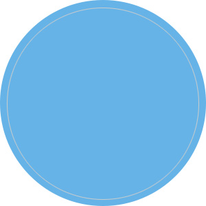
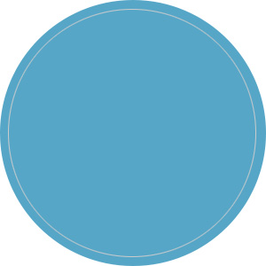
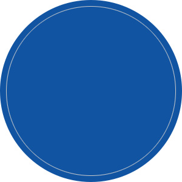
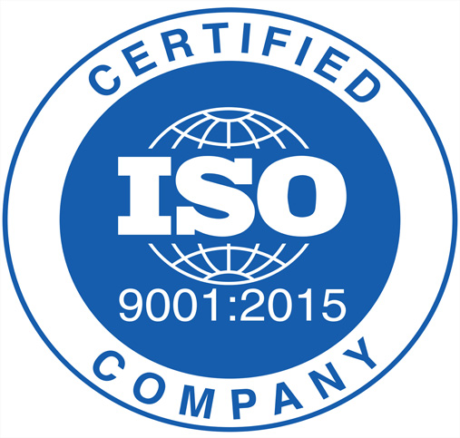

HOME > 지속경영 > 품질경영
품질경영
품질경영체계
The POSCO Quality
고객의 魂까지 감동시키는 초일류 품질
Customer
Inside
Basic
Inside
Synergy
Inside
고객우선 품질관리
표준준수, 편차 제로화
패밀리,공급사/파트너사
품질경영 전략목표
  Global 품질경영 기반으로 소재 전문기업 포스코엠텍
Customer
Inside
Basic
Inside
Synergy
Inside
고객중심
맞춤형 품질경영
Global Standard
품질경영
상생협력
동반성장
ISO9001
포스코엠텍은 2007.10 품질경영시스템 ISO 9001을도입하여 조직에 적합한 시스템 및 프로세스를 지속적으로 개선, 보완함으로써 회사의 경영목표 달성과 경쟁력 확보에 이바지하고 있습니다.
ISO 9001 인증이란?

ISO 9001 인증은 품질의지를 입증하는 기준점이 되는 신뢰성있는 징표로서 모든 업무수행 실적을 주기적으로 측정하여 개선방향을 제시함으로써 품질경영의 수준을 지속적으로 높여가는 고객중심 경영활동 입니다.